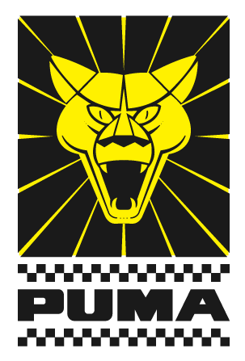

Puma: história, anos, versões, motor, detalhes e curiosidades.
A história da marca se iniciou em 1964, quando Malzoni criou, sobre a estrutura DKW Vemag, a carroceria do GT Malzoni, primeiro Puma da história. Ainda sem ter estrutura suficiente para fabricar motores e conjuntos mecânicos, Rino se aproveitava das estruturas de outras marcas
Raça é raça.
Símbolo da paixão automotiva do Brasil, a Puma Automóveis é a marca referência presente no imaginário dos apaixonados por automobilismo, com uma história de empreendedorismo de muita garra e determinação, sendo a empresa brasileira com maior número de produção de veículos esportivos da história.
Hoje, meio século depois da fase histórica em que se consagrou como protagonista no imaginário de milhões de auto-entusiastas, a Puma Automóveis ressurge, com o coração batendo forte nas pistas, mas em um circuito diferente, com o Puma GT Lumimari, um autêntico esportivo com exclusividade esportiva e garra nacional.
GT Malzoni
Tudo teve início a partir do protótipo de pista que Rino Malzoni desenvolveu em sua fazenda na cidade de Matão/SP.
O projeto teve o apoio da Vemag, que forneceu chassis e mecânica, pois queriam um modelo para fazer frente ao Interlagos da Willys que em 1964 saiu vitorioso em vários eventos. O esportivo possuía o motor DKW dianteiro, 3 cilindros de 981 cm3 e pesava 720 kg.
Com o modelo em evolução e ganhando várias competições foi fundada a empresa Sociedade de Automóveis Lumimari Ltda. formada por Luiz Roberto Alves da Costa (LU) Milton Masteguin (MI), Mário César de Camargo Filho (MA) e Rino Malzoni (RI), o modelo foi batizado de GT Malzoni que apesar de ser exclusivo para as pistas teve algumas unidades vendidas para as ruas.
Puma GT Malzoni 1964
Puma GT (DKW)
Em 1966 já com a idéia de vender um modelo exclusivo para as ruas, foi sugerido um novo nome para desvincular a imagem de carro de corrida e o nome Puma foi escolhido.
Com isso a empresa mudou de Sociedade de Automóveis Lumimari Ltda. para Puma Veículos e Motores Ltda. A versão de rua estreou no Salão do Automóvel em novembro de 1966, batizado de Puma GT (popularmente conhecido por Puma DKW), baseado na carroceria do GT Malzoni, mas com várias modificações estéticas e técnicas, além de um melhor refinamento no acabamento.
A frente ganhou nova grade e para-choques, o painel de instrumentos recebeu um novo desenho com acabamento em madeira, a porta avançou e ganhou um novo recorte e a traseira também foi redesenhada recebendo inclusive uma nova lanterna (que era a mesma peça que equipava a luz de seta dianteira da picape Chevrolet C-10), mas com lentes vermelhas.
Foram produzidas 125 unidades, mas a Vemag encerrou suas atividades em 1967 deixando a Puma temporariamente sem um fornecedor de motor e chassis.
Puma GT DKW 1967
Puma GT – Volkswagen
Devido a compra da Vemag pela Volkswagen, a produção dos modelos DKW (na qual o Puma utilizava a mecânica até então), foi suspensa em 1967.
A Puma se viu então, em uma situação complicada sem o fornecimento de chassis e motor, precisando assim de um novo projeto. Rino Malzoni então retomou um projeto de um carro de corrida que estava parado em sua fazenda e nove meses depois o protótipo estava pronto.
Para esse novo modelo optaram pelo conjunto mecânico traseiro de 1500 cm3 da VW, o chassis era do Karmann-Ghia com a distância entre-eixos encurtada. Suas linhas tinham traços semelhantes as do seu antecessor com um toque de inspiração no Lamborghini Miura, chamava atenção as suas belas linhas sem cantos vivos, suas entradas de ar laterais semelhantes a guelras de tubarão (o que originou o apelido “Tubarão”), e a ausência da grade frontal dava um ar mais aerodinâmico.
O Puma GT VW foi modelo mais bem sucedido da Puma ajudando o crescimento e a consolidação da marca.
Puma GT 1968 (Tubarão)
Puma GT4R
Após o sucesso do Puma GT VW que imortalizou de vez a Puma, foi a vez de um dos modelos mais exclusivos que a Puma já fez, encomendado pela revista Quatro Rodas, o GT4R que seria sorteado entre os seus leitores. Aceitando o desafio, a Puma começou o desenvolvimento desse inédito modelo que foi baseado a partir de um protótipo de corrida que Rino Malzoni vinha desenvolvendo. A plataforma era do Karmann-Ghia com motor de 1600 cilindradas e dois carburadores Solex 32/34, o chassis, ao contrário do GT VW não era encurtado.
O acabamento interno era aprimorado com bancos de couro e cintos de segurança de 3 pontos e externamente era mais comprido que o Puma GT, a frente tinha formato muito aerodinâmico e faróis retangulares embutidos na carroceria com uma tampa acrílica que acompanhava o desenho do capô. Foram feitos 3 exemplares (nas cores: cobre, azul e verde) e todos sorteados pela revista em 1969, posteriormente foi feita mais uma unidade, para uso exclusivo de Rino Malzoni.
Puma GT4 1969
Puma GTE e Puma Spider
Estimulada pela política de incentivo às exportações, a Puma introduziu melhorias no seu GT para atender as exigências de outros países, surgia então o GTE (E de “Exportação”).
Os piscas dianteiros do DKW Fissore foram substituídos pelos do Corcel e foram parar ao lado dos faróis principais, a abertura do capô foi invertida, novas entradas de ar para a ventilação interna (logo atrás do capô), os cantos inferiores do para-brisa ficaram arredondados, o interior ficou mais requintado (com uma faixa do painel imitando marfim), volante esportivo Panther, console entre os bancos, bancos com novo desenho e ilhoses metálicos, na parte traseira uma saída de ar abaixo da vigia traseiro e as lanternas passaram a ser as mesmas da VW Variant.
Puma GTE Spider 1971
Porém, alguns veículos destinados a exportação (dependendo da legislação de cada país) receberam lanternas de pisca redondas vindas das motos Honda, solução que a Puma adotaria no Brasil para o modelo 74 e as lanternas traseiras do Saab Sonett, que eram muito semelhantes as das Variant, um pouco mais largas. Já os piscas laterais eram uma exigência norte-americana.
Os veículos exportados possuíam um adesivo “Made in Brazil” na vigia traseira. Em 1971 foi a vez do modelo conversível, o Spider (diferente do modelo fechado), a frente perdeu o vinco central apelidado de “bigode”, o capô ganhou um desenho simulando uma saída de ar bipartida e o mesmo aconteceu com o desenho do porta-malas, que era mais longo que o da versão fechada.
O Spider ganhou um aerofólio e novas rodas com formato de estrela que também seriam incorporadas ao modelo GTE em 1972. O Spider tinha como acessório uma capota rígida removível. O modelo 1974 perdeu a bolha do farol, ganhou piscas circulares como no modelo exportação, o capô ficou mais liso e os limpadores de parabrisa passaram a ser paralelos. O modelo conversível passou a se chamar GTS.
Puma GTE 1972
Puma GTB
Era hora da Puma ter um segundo modelo e a idéia era algo mais potente como um Muscle Car. Rino Malzoni então fez um primeiro protótipo em 1971, batizado de P-8, que utilizava todo o conjunto mecânico dianteiro do Opala 6 cilindros, mas com chassis feito com perfis de aço soldados.
O desenho do primeiro protótipo que herdou alguns detalhes estéticos do GT4R não empolgou e foi todo refeito para chegar até o desenho definitivo, sendo apresentado no Salão do Automóvel de 1972 o Puma GTO. O nome porém, não agradou a GM, alegando que o nome pertencia a um modelo da sua divisão Pontiac.
Puma GTB 1977 Lanternas Lanternas Traseira do Saab Sonett.
A Puma então alterou o nome para GTB que só chegou a ser comercializado em 1974. Além de algumas pequenas alterações estéticas na dianteira, a suspensão traseira passou a ser com feixe de molas, não mais como a do Opala. Em 1976 o Puma GTB passou por algumas modificações como a grade dianteira com frisos verticais e no ano de 1978 a lanterna traseira passou a ser a mesma do Alfa Romeo 2300 e não mais a do Saab Sonett.
Puma GTB 1978 com as lanternas traseira da Alfa Romeo 2300.
Novos Puma GTE e Puma GTS
No final de 1976 a Puma apresentou os novos GTE e GTS, já utilizando nova plataforma do VW Brasília e não mais a do Karmann-Ghia.
Esta nova plataforma era mais larga e permitia um espaço interno maior, o modelo GTE ganhou janelas no lugar das famosas entradas de ar em formato de guelras de tubarão, aumentando o ângulo de visão. Os paralamas foram aumentados para receberem os novos pneus Pirelli Cinturato CN-36, as portas ficaram maiores e com novas maçanetas e por dentro um novo painel de instrumentos agora com porta-luvas. Os bancos mais anatômicos e com curso maior melhorando o conforto para motoristas e passageiros com maiores estaturas, na traseira uma tampa maior com nova grade para o arrefecimento do motor e lanternas de Kombi. A capota do GTS recebeu nova armação que facilitava o fechamento e melhorava a vedação.
Os novos modelos foram muito bem recebidos pelo mercado.
Puma GTE 1980
Puma GTB S2
A segunda geração do GTB, conhecida por S2, foi apresentada no Salão do Automóvel de 1978. De linhas elegantes e frente mais baixa, a característica mais marcante do carro estava na frente.
Elementos horizontais, molduras dos faróis, grade e para-choque, todos em preto com o logo da Puma em vermelho na grade dando um toque totalmente agressivo. Ao contrário da tendência dos faróis quadrados no final dos anos 70, os duplos redondos foram uma solução simples e que deram muita personalidade ao GTB.
O desenho em geral com estilo fluído inspirou as linhas do substituto do GTI, o P-018 que seria apresentado 3 anos depois. A lanterna traseira era frisada vinda do Brasília.
O requintado interior possuía direção hidráulica, ar condicionado e vidros elétricos, itens comuns nos dias de hoje, mas que na época só eram disponíveis para carros top de linha. Os bancos em couro eram anatômicos e com um belíssimo desenho.
A motorização era a mesma, o confiável e potente motor 250 S da Chevrolet, mas com alguns aperfeiçoamentos.
Puma GTB S2 1980
Puma GTI e GTC
Em 1980 o GTE passou por uma restilização e foi rebatizado como GTI, enquanto a versão conversível GTS mudou para GTC.
A mudança mais marcante foi no parachoque. Uma borracha envolvendo quase todo o parachoque e nas extremidades polainas ao estilo do Porsche 911, abaixo um spoiler envolvente onde abriga uma nova luz de pisca retangular, o logo Puma frontal passou a ser preto e não mais cromado. A traseira também recebeu o mesmo desenho dos parachoques, toda a traseira, aliás, ganhou um novo desenho para abrigar a nova lanterna (assim como no GTB S2), vinda do VW Brasília e na lateral uma nova maçaneta.
Foi a partir do GTI que a Puma passou a oferecer teto solar (fabricado pela Karmann-Ghia) como opcional, mas foi muito utilizado nos modelos para exportação.
Puma GTC 1982
Caminhões
A Puma já fabricava cabines de fibra de vidro para caminhões Chevrolet desde 1971, muitos deles fizeram parte da frota de um conhecido fabricante de refrigerantes.
Já com 8 anos de experiência fabricando cabines, a Puma decidiu então lançar seu próprio caminhão em 1978, o Puma 4T, que vinha com 3 opções de motores: Perkins 4 cilindros, MWM também de 4 cilindros e o Detroit de 3 cilindros com câmbio Clark, sendo este o primeiro caminhão a possuir o câmbio automático e também foram fabricadas versões com a cabine dupla para atender a clientes como Sabesp.

Caminhão Puma 4T
Algum tempo mais tarde, foi apresentado o modelo Puma 6T, e também um projeto para um micro onibus aproveitando o chassis do Puma 6T. Em 1981 foi a vez do caminhão leve Puma 2T, com rodagem simples na traseira, mas poucos foram fabricados.

Caminhão Puma 6 T
Interessante citar a versão Boiadeiro (trucado) que visava o transporte de gado e chegaram, inclusive, a desenvolver um caminhão plataforma, mas não entrou em produção, apenas serviu como teste para o Corpo de Bombeiros.
O Puma 4T foi o modelo mais vendido sendo fabricado por vários anos.
Catalogo Puma 7900 CB
O modelo 7900 foi o último fabricado com a marca Puma, pela Alfa Metais. Ele trazia muitas mudanças em relação ao caminhão que deu origem, o Puma 4.T. Era muito bem visto no mercado e o preferido em cidades litorâneas, em duas versões, esta apresentada no catalogo e a CD - Cabine Dupla. A Puma encerrou quando o Níveo faleceu, porque se ele estive vivo, nunca teria fechado as portas, o 7900 teria garantido a sobrevivência até os atuais dias. Nos automóveis até poderia ter paralizado a produção, mas os caminhões continuariam, eles não deixavam nada a desejar em relação aos projetos estrangeiros. Hoje circula um boato que vão voltar a fabricá-los em outra cidade e Estado.

Caminhão Puma 7900 CB 1996
Puma P-018
Com a chegada dos anos 80 a Puma decidiu renovar completamente o seu modelo mais bem sucedido, o GTE/GTI.
Começou então o desenvolvimento do novo modelo, ainda na carroceria do GTI, como protótipo, o projeto visava chassis próprio, suspensão moderna e um motor refrigerado a água, seria o P-016, mas devido ao alto custo este protótipo foi cancelado.
Foi desenvolvido em paralelo o P-018, que possuÍa uma nova carroceria porém, manteve o chassis e mecânica do VW Brasília, mas com cilindrada aumentada para 1700 cm3 e a suspensão traseira independente da Variant II. Externamente evoluiu bastante, a nova frente ainda mantinha o capô baixo e os faróis redondos no para-lama, porém, o parachoque era mais quadrado que o modelo anterior (tendência da nova década), a maçaneta tinha um belo desenho circular e exclusivo, e da metade do carro para trás ficou evidente a adoção do padrão visual do GTB S2, inclusive com as mesmas lanternas caneladas do Brasília. Uma versão conversível chegou a ser desenvolvida com faróis retangulares, mas poucos foram produzidos.
O P-018 foi apresentado em 1981, mas as vendas não foram suficientes já que a Puma foi muito prejudicada com várias enchentes e um incêndio na fábrica.
Em novembro de 1985, a Puma Indústria de Veículos S.A. representada pelos proprietários – Luiz Roberto Alves da Costa e Milton Masteguin – encerra as suas atividades e os ativos são transferidos para a Araucária Veiculos no estado do Paraná, a qual deu continuidade à produção dos modelos da Puma.